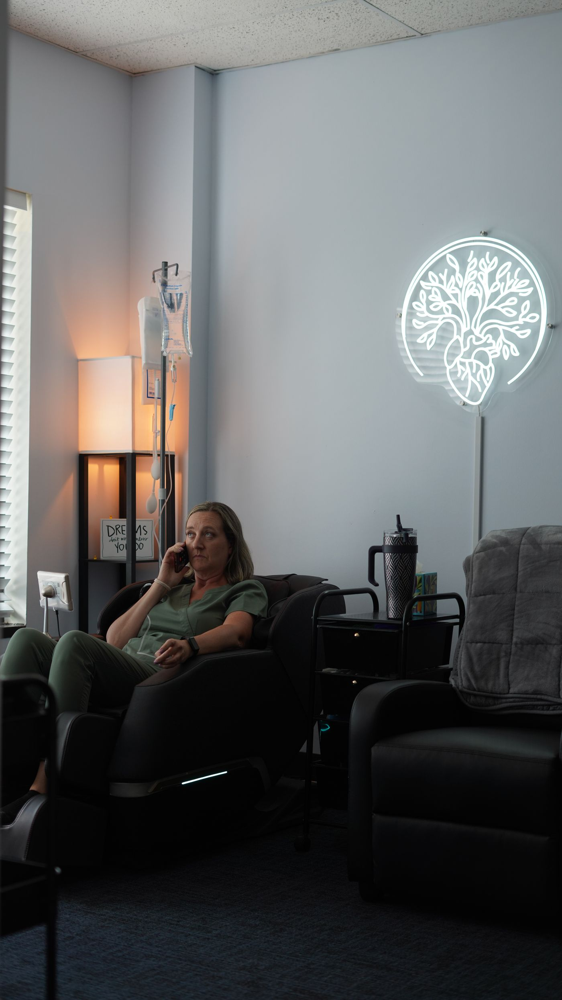

Disc-related pain
Targeted relief for herniated and bulging disc symptoms.

Spinal Decompression
Non-surgical, drug-free spinal decompression for disc-related back and neck pain and sciatica in Voorhees, NJ.
Asylum Sports Performance & Recovery
A drug-free, non-surgical option for disc-related back and neck pain and sciatica. A specialized table applies a gentle, controlled stretch to take pressure off the disc and nerve, supervised by Dr. Nisar.
What it helps
Targeted relief for herniated and bulging disc symptoms.
Ease radiating leg pain by reducing pressure on the nerve.
A non-surgical, medication-free option worth exploring before more invasive steps.
Questions
Private one-on-one or one-on-two, fully customized 60-minute sessions.
Come dressed like you would for a normal workout: shorts, leggings, or whatever you feel comfortable exercising in.
This depends on the individual and is discussed during your initial assessment.
New Patient / Initial Assessment is 75 to 90 minutes, $400. Follow-Up Visit is 60 minutes, $175.
Yes for select providers. Ask about current bundle options at your visit.
No. None of our Sports Performance & Recovery services are covered by insurance. Asylum operates on a 100% cash-pay basis across all services.
Menu
Chiropractic and sports recovery with Dr. Nisar, plus one-on-one personal training. Bundle pricing is available, just ask.
| Chiropractic & Sports Recovery, Dr. Nisar | Length | From |
|---|---|---|
| New Patient / Initial Assessment | 75 to 90 min | $400 |
| Follow-Up Visit | 60 min | $175 |
| Follow-Up, existing patient | 30 min | $125 |
| Follow-Up, existing patient | 90 min | $225 |
| Personal Training, Mary Valenzano, CPT | Length | From |
|---|---|---|
| One-on-One Training | 60 min | $100 |
Book a spinal decompression evaluation with Asylum Sports Performance & Recovery.